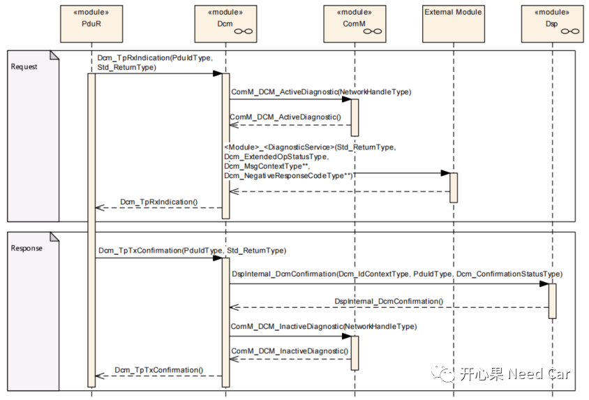
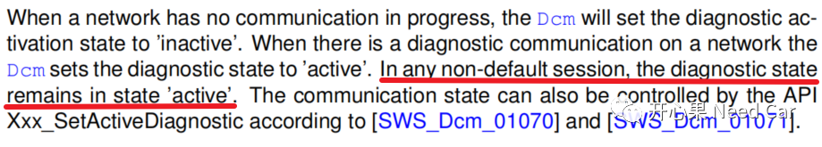
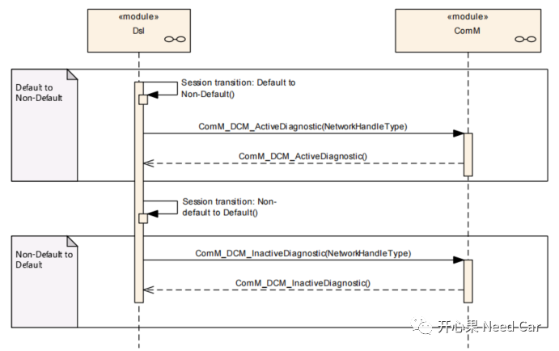
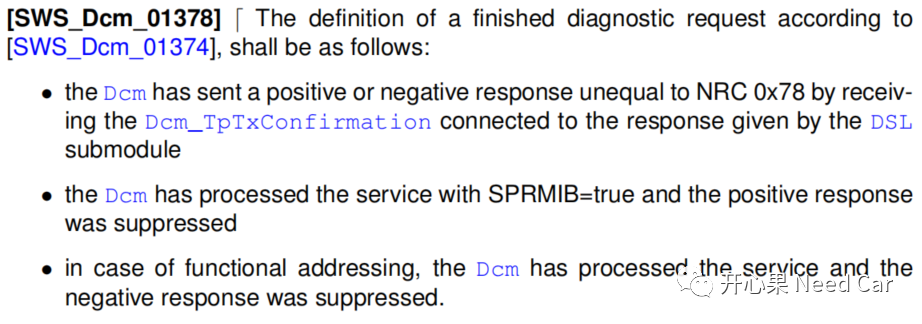

之前的文章提到过：“诊断报文可以保持网络状态”的观点，可以参考前文Autosar网络管理：诊断报文能否唤醒网络？本文，进一步细化这个问题：
默认会话（Default Session），诊断报文如何影响网络状态
非默认会话，诊断报文如何影响网络状态？
默认会话下，周期性发送$3E 80，网络状态还会保持吗？
诊断报文能否保持网络状态取决于DCM（Diagnostic Communication Manager）的激活状态，即：DCM处于"active"状态时，会主动请求ComM进入"FULL COMMUNICATION"的通信模式；DCM处于"inactive"状态时，会请求ComM进入"NO COMMUNICATION"的通信状态。
1、默认会话（Default Session），诊断报文对网络状态的影响
在默认会话下（Default Session），DCM收到PduR诊断请求以后，DCM会调用接口ComM_DCM_ActiveDiagnostic()，请求ComM进入COMM_FULL_COMMUNICATION模式，保持通信，进而保持网络状态（或者请求网络）；当DCM的响应被确认以后（即：Confirmation），DCM调用接口ComM_DCM_InactiveDiagnostic()请求ComM释放通信，释放网络。Autosar规范的描述如下所示：解释：默认会话下，收到诊断请求，DCM进入"active"状态，请求通信，也就请求了网络。
也就是说：在默认会话下，每次处理诊断请求的时候，DCM均会请求ComM保持通信，诊断处理完成（Finish）再通知ComM释放通信，进而释放网络。

当DCM由默认会话（Default Session）进入非默认会话（Non-Default Session）以后，DCM会调用接口ComM_DCM_ActiveDiagnostic()通知ComM，请求COMM_FULL_COMMUNICATION，保持通信，进而保持网络状态（或者说请求网络）；当DCM再次回到默认会话以后，DCM调用接口ComM_DCM_InactiveDiagnostic()请求ComM释放通信，释放网络。Autosar的解释如下所示：
解释：非默认会话（Non-Default Session）下，DCM处于"active"状态，也就意味着：通信一直保持，网络状态保持。如果非默认会话进入默认会话（包括Server3超时进入默认会话），DCM进入"inactive"状态，DCM会请求ComM释放通信请求，进而释放网络。

3、默认会话下，周期性发送$3E 80，网络状态还会保持吗？
A：个人理解，默认会话下，收到功能寻址的$3E 80（Tester Present）请求，该请求虽然还会通知DCM，但是DCM不会进一步的通知ComM保持通信，因此，也不会保持网络状态。此时，功能寻址的$3E 80等同于一个应用报文处理。Autosar中给出了几种诊断请求Finish的工况，如下所示：
- DCM给出了非NRC0x78的最终响应，且被Confirmation（表示成功发送到总线）；
- DCM收到的诊断请求中，响应抑制位置位（SPRMIB=1），即：无需给出最终的正响应；
如上三种情况，均可以看作是诊断报文处理完成，如果是在默认会话下，意味着DCM会请求ComM释放通信，进而释放网络。
除了如上的三种情况，在讨论诊断报文是否能维持网络状态时，还需要考虑服务的类型，比如：$10 02/82 、$11 Xx，这些诊断指令要求ECU复位。ECU的复位，意味着状态的重新初始化，包括通信状态。所以，在我们讨论诊断报文可以维持网络状态的时候，需要根据诊断报文的服务类型、响应抑制位情况、寻址类型、会话状态讨论，且不能一概而论。点击下方关注，一起聊聊Autosar/嵌入式，如果需要，联系作者进群，给你更专业的解答